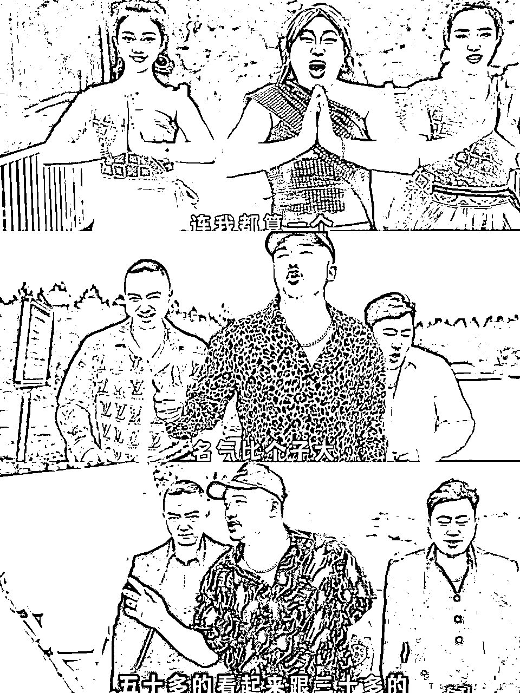
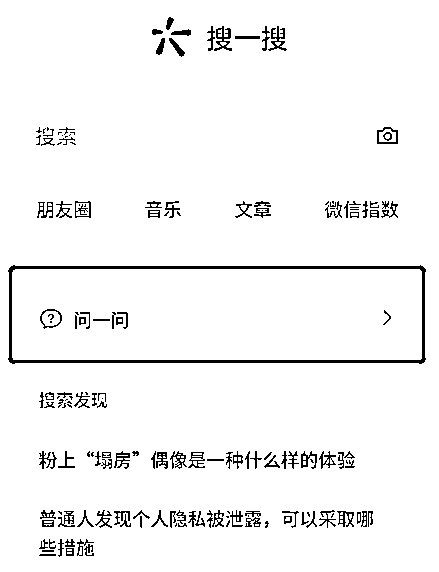
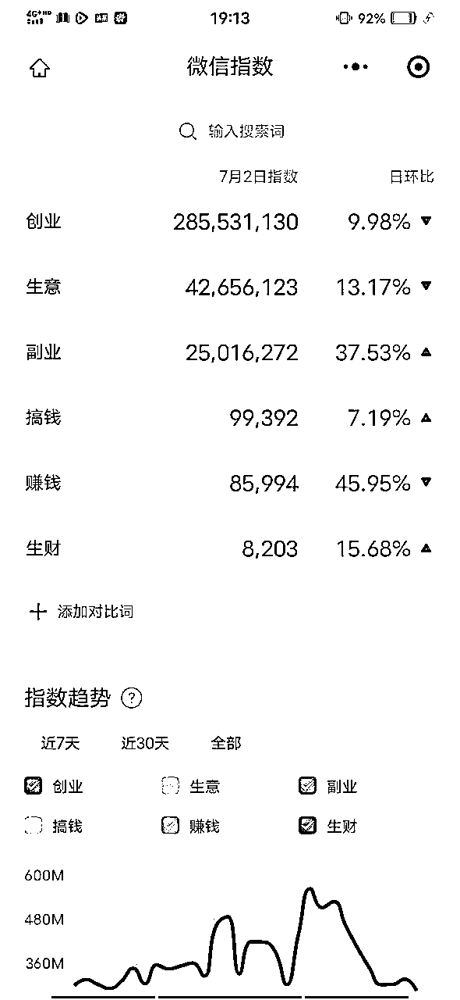
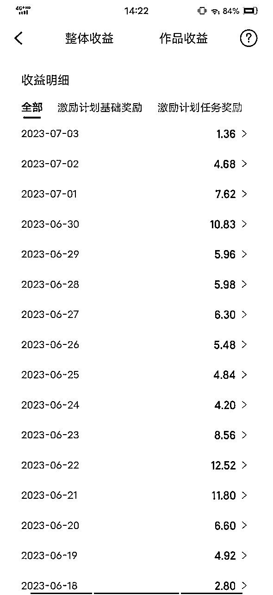
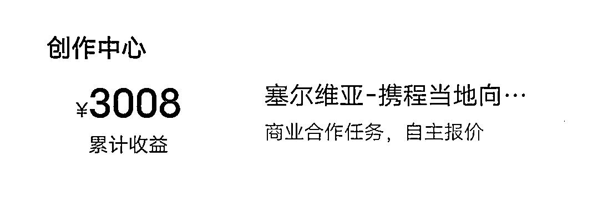
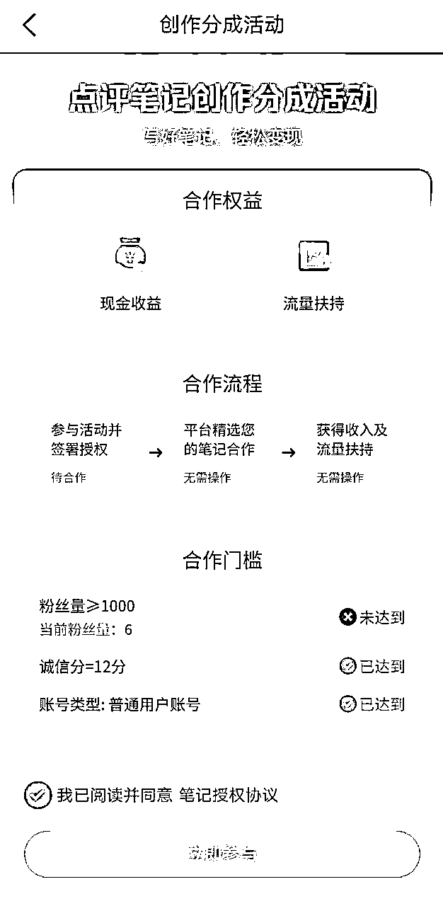
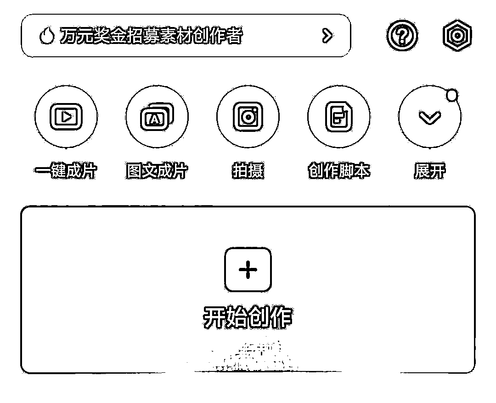
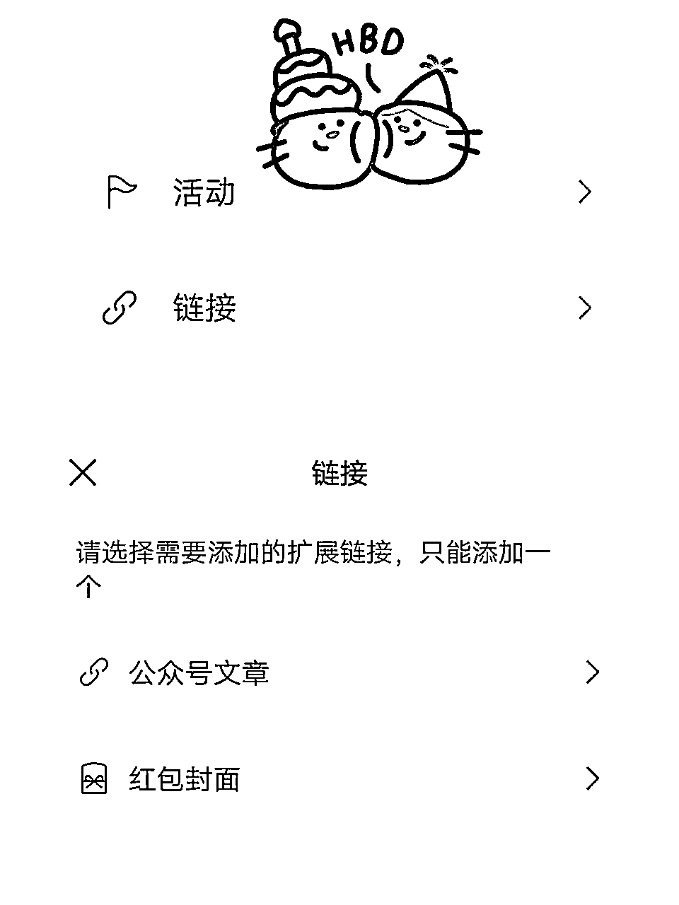
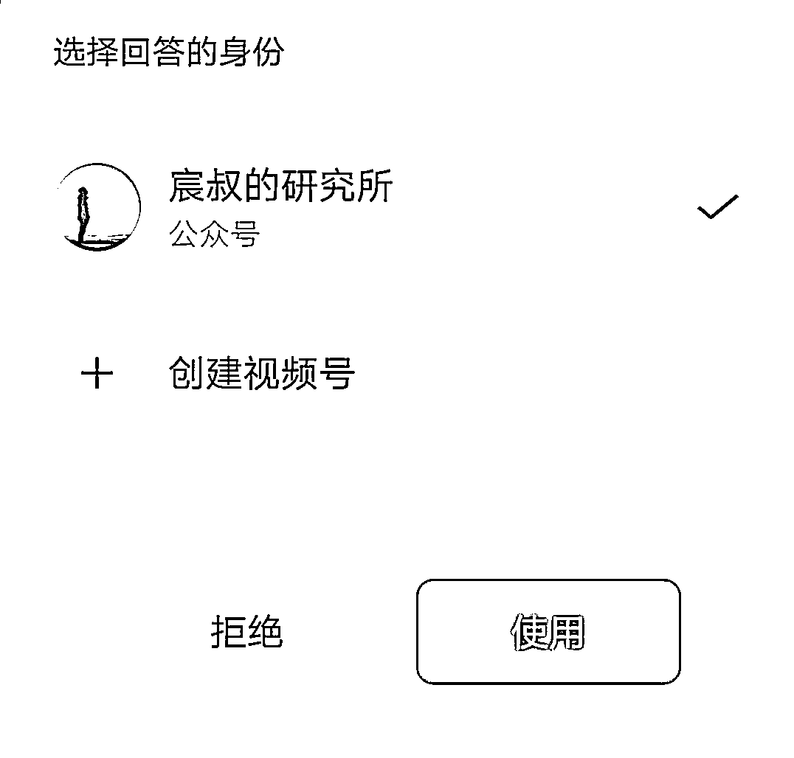
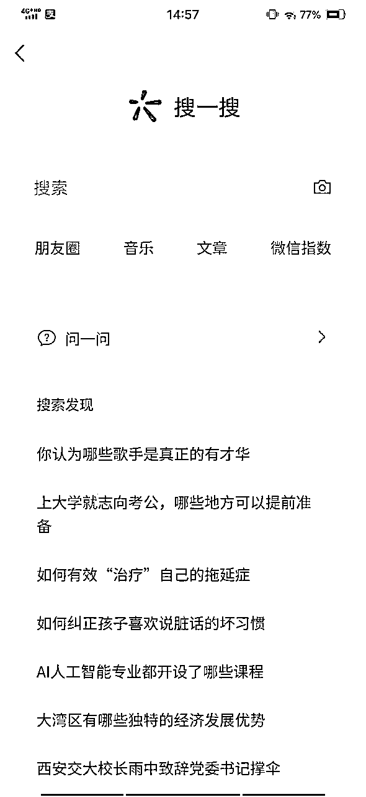

来源：https://gd7vhxq16l.feishu.cn/docx/UoVjd1bf1oPD7kxqRzqc5xA1nrd
大家好，我是亦小亮，也是咱们的生财老圈友啦！已经近两年没在生财发帖啦！也是因为小霸王的邀约写了这篇文章，希望对于正在做公众号流量主项目的圈友一点帮助。
自从5月份，也就是上次航海，开始做公众号流量主生意，本尊号也不好好更了，因为流量主的生意实在太香了。
今天跟大家分享的主题是「如何迅速把一篇文章的阅读量提高到 1 万以上，每日收益稳定三位数」。当然迅速也不是说「马上」，这里有一个反应过程，我们为了加速这个过程，要有两个动作，三到七天差不多能达成效果，如果你是老号或者粉丝相对多的号，这个时间可能更短。
至于能不能达到 10 万，这个属实就看文章质量了。
用这两个办法前，我一般会有几个选题技巧，这几个技巧会贯穿在这一套方法里面。
关于情感领域方向，依然可以继续细分，细分在婆媳、相亲、女权等等，越细分，你的目标人群看文章时间越长，完读率越高。
关于热点领域方向，也是可以细分的，比如军事（台湾大选、俄乌战争）、历史、网红背后故事，比如前段时间的豪哥哥，你可以用拆解的角度去写，人物故事、拍摄手法、拍摄内容、商业逻辑、爆火背后。
以人物故事为例，可以去深耕这个主播-豪哥哥，他从模仿改编歌曲被人熟知，模仿印度阿三而爆火，当然他深谙印度阿三的故事，才可能把印度这个人物形象展现的淋漓尽致，火爆背后，也是因为他刻画的这个印度阿三的人物形象本身知名度高。

比如，这首散装歌曲，视频我自己也看了不下十多遍，非常上头。
关于娱乐领域方向，比如拿吃瓜这个题材来说，瓜有三六九等，瓜有生瓜和熟瓜，也有红瓜和黑瓜。
生瓜就是刚落地，事件刚发生；
熟瓜就是事件发酵到人尽皆知，比如 wyf；
黑瓜就是不好的事件，但是有些人的黑瓜别碰，比如一些香港大佬，cl、zzw；
有一些内地的黑瓜，常吃常香，因为他们本人也是深谙此道，比如 zdd、hcy；
有时候天降大瓜，够吃一两月的，比如 wyf、cxk；
吃瓜也是有讲究的，比如 mr 的瓜，常吃常新，也不会出现什么风险。
我其中一个号大多数还是吃红瓜，一来比较安全，二来流量稳定。保持每日一万以上的阅读量，收益在 50+，目前最高也只不过 300，不过这是累积作用，我会更到 100 篇看看，后面也准备走带货。
通过搜一搜、看一看、微信指数查看相关关键词，指数高、文章数量少、质量低这类领域或者内容都可以拿来进行创作：

比如，想做副业方向的，可以查看微信指数，对于写文章非常有帮助，你可以看到创业这个关键词每日搜索量非常大，利用这个关键词布局文章内容：

这个是我选题的时候特别重视的，一旦不符合我一鱼多吃思维的产品，坚决不要，比如我有一个旅游号，文章内容写好后，根据不同平台，略微改动以下，然后分发到携程、大众点评网里。

携程已经保证我一天平均拿到 10 快钱（当然你要深耕也不会这么少），目前总收入也超过 3000 块钱了。

大众点评网目前流量主有门槛，还没有拿到创作资格。如果对这一块有研究或者也想来玩的，可以一起来探讨。

其实，旅游号也可以追热点的，比如前段时间，贵州榕江的村超，我就把榕江的旅游写了三篇文章，分别从攻略、人土风情、当地特产，狠狠赚了一波流量生意。
目前疫情恢复以后，旅游将会是一直热门领域，是个非常不错可以长期深耕的领域。
其实，体育赛道也是一个非常适合长期来做的赛道，细分下去，比如篮球-中国女篮-村BNA。
选完题，文章内容也写好了，也在公众号发出去了，这样就能拿到结果吗？
当然不是啦！
接下来的操作，大家一定要去试试，看看如何快速让你的文章达到 1 万阅读量。
我们要用写好的文章内容延伸出两到 3 篇视频文案，甚至 5 篇。
对了，就是视频号文案。
至于视频号文案，可以从文章的开头截取一部分作为视频文案，也可以用文章的小标题累积出来。可以用倒叙的方式来做文章内容，就是先写视频文案，或者大纲，最后补充具体内容，这样操作就比较丝滑。
视频的展示形式可以以图片为主、图片视频结合、纯视频为主。
如果剪辑基础薄弱或者小白直接上手纯图片或者纯视频，不用混搭，节约时间，当然过原创后的推荐肯定没有混搭效果好，不过可以慢慢来。
用纯图片多用渲染和展示效果，娱乐领域的话，就是明星的图片，做出来一个视频，用剪映的图文成片功能，就能搞定。

纯视频素材可以用一些治愈系视频或者解压类视频作为视频素材，比如下面这段洗车解压视频，就可以配一些生活情感类的文案。
这部分要求不高，用剪映都能完成。可以多刷刷视频号和抖音，这里视频非常多！对于对视频剪辑能力强的圈友，可以说10分钟就搞定了，小白的话，用纯图片或者单纯治愈类视频，也可以做到。
最后做好视频，每个视频下面把你的微信公众号文章内容链接贴上。

我粗略算过，每阅读视频 1000 次，点击文章打开率在 10%以上，而且具备长尾效应。比如我上次写了王宝强的八角笼中，目前一天也会有几百的阅读量。
本身视频号的变现也非常多，所以，视频号做好了，也是可以走变现路子的。
当然，你会说热点结束了，也就没有流量了别急，下面重点就来了。
最近微信上线了问一问，大家可以用视频号身份回答，也可以用微信公众号身份回答，如果没有你想要的问题，可以一个号提问，一个号回答。

所以，看自己的需求，主战场在那里，就用什么身份回答，这样完全可以说是一鱼三吃。
这样就回归到选题了，因为选题选得好，公众号、视频号、问一问，可以把这三个穿起来，相互倒流，使三者都可以变现，不仅仅停留在流量主收益上。
其实，还有如何提高流量收益，可以通过排版解决这个问题，由于还在监察期，留在下次分享喽！
目前问一问窗口在搜一搜栏目，打开后就能看到。

比如，副业这个领域，可以说是完美结合，当然旅游领域也是相得益彰。
今天的分享就到这里了，有帮助的话，就点点赞啊！有兴趣的可以一起交流哦!
补充一下：有不少圈友问我本尊号「挣钱研究所」，我说一下，最近有一段时间没更新了，但是我会更的，等这段时间把流量主的号SOP了，就来更。